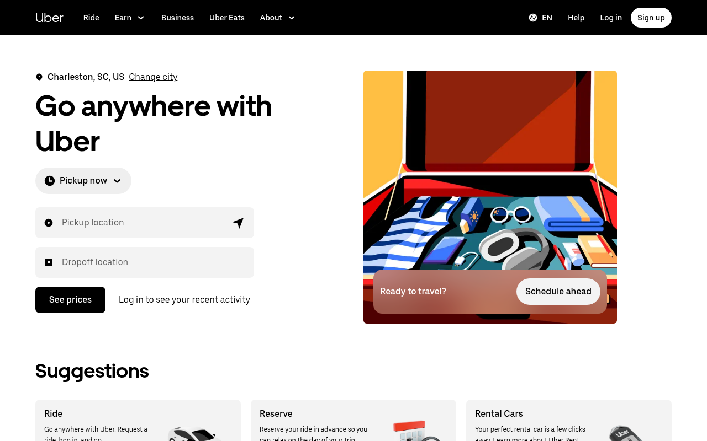

Uber — Base Web (no CSS custom props)
https://uber.com 이 실제로 서빙하는 CSS 에서 직접 뽑은 디자인 토큰·타이포그래피·컴포넌트 스펙. CSS 커스텀 프로퍼티 없이 직접 hex 값으로 운용하는 Base Web 인라인 스타일 구조다.

body {
font-family: UberMoveText,
system-ui, "Helvetica Neue",
Helvetica, Arial, sans-serif;
font-weight: 500;
/* ⚠️ 400 아님. Uber body는 500 */
}
:root {
--bg: #FFFFFF;
--fg: #000000;
}
body {
background: var(--bg);
color: var(--fg);
}
:root {
--brand: #276EF1;
/* Uber blue, 40 hits in DOM */
}
/* CTA 버튼 */
.btn-primary {
background: #276EF1;
font-family: UberMove;
font-weight: 700;
}
UberMoveText와 UberMove를 혼용하는 것. UberMoveText(count: 53)는 본문용, UberMove(count: 34)는 display/heading용이다. 둘을 구분 없이 쓰면 타이포 위계가 무너진다.
출처와 수집 기준
URL · fetch 시점 · 파싱 방식까지 모두 CSS 번들에서 직접 뽑은 값이다.
https://uber.com테크 스택
프레임워크, 디자인 시스템, CSS 아키텍처, 테마, 폰트 로딩 방식.
#FFFFFF)UberMove, UberMoveText 셀프 호스트 + 서브셋 (Book, Medium, Narrow 등)#276EF1 — frequency_candidates에서 40회 확인된 Uber blue타이포그래피
Uber는 두 폰트 패밀리를 목적에 따라 엄격하게 구분한다. UberMoveText(본문)와 UberMove(heading/display)는 혼용하지 않는다.
UberMoveText, system-ui, "Helvetica Neue", Helvetica, Arial, sans-serif
UberMove, UberMoveText, system-ui, "Helvetica Neue", sans-serif
500 — Uber body 기본. 400(count: 11)보다 500(count: 39)이 3.5배 더 많다.
700 — heading, 버튼 레이블
font-weight: 400을 기본으로 두면 전체가 너무 얇게 보인다.
Aktiv Grotesk(유료) 또는 무료 대체로 Inter.
컬러
CSS 커스텀 프로퍼티 없이 직접 hex로 운용. DOM 빈도 분석으로 역산한 canonical 값들.
#276EF1 ★ canonical Uber blue. #ADDEC9는 드라이버 상태·긍정 표시용 보조 accent — CTA에 쓰지 마라.
#E8E8E8(count: 504)가 DOM에서 압도적 1위 — 구분선, 테두리, tertiary bg에 광범위하게 쓰인다. 배경으로는 쓰지 마라 — 그건 테두리/구분선 색이다.
스페이싱
Base Web 4px 배수 그리드 기반 스페이싱 시스템.
4px(xs) → 8px(sm) → 16px(md) → 24px(lg) → 48px(xl).
라디우스
버튼과 카드 모두 8px — 일관된 corner radius가 Uber의 절제된 라운드 감을 만든다.
날카로운 모서리
인풋, 뱃지
버튼 · 카드
배지, 태그
8px다. 이 일관성이 Uber 디자인의 절제된 균형감을 만든다.
컴포넌트
Primary 버튼. 핵심: UberMove 폰트(heading용), weight 700, brand blue #276EF1.
.btn-primary {
background: #276EF1; /* Uber canonical blue */
color: #FFFFFF;
font-family: UberMove, UberMoveText, system-ui, sans-serif;
font-weight: 700;
border-radius: 8px;
padding: 12px 24px;
border: none;
cursor: pointer;
}
.btn-primary:hover {
background: #1E5BC7;
}
background #276EF1color #FFFFFFfont-family UberMove (heading용)font-weight 700border-radius 8px버튼은 UberMoveText가 아닌 UberMove를 쓴다. 본문과 구분되는 heading 폰트를 CTA에도 적용하는 것이 Uber 스타일이다.
UberMoveText(count 53)는 본문 paragrah, 메타 텍스트에. UberMove(count 34)는 h1~h3 제목과 CTA 버튼에. 이 구분을 무너뜨리면 Uber의 타이포 위계가 사라진다.
Drop-in CSS
루트 스타일시트에 바로 붙여넣을 수 있는 Uber 토큰 정의.
/* Uber — copy into your root stylesheet */ :root { /* Fonts */ --font-family-text: UberMoveText, system-ui, "Helvetica Neue", Helvetica, Arial, sans-serif; --font-family-display: UberMove, UberMoveText, system-ui, "Helvetica Neue", sans-serif; --font-weight-normal: 500; /* ⚠️ 400 아님 */ --font-weight-bold: 700; /* Brand */ --brand: #276EF1; /* ← canonical Uber blue */ --brand-accent: #ADDEC9; /* 드라이버 상태 표시 전용 */ /* Surfaces */ --bg-page: #FFFFFF; --bg-secondary: #F3F3F3; --bg-tertiary: #E8E8E8; /* 구분선, 테두리 (배경 X) */ --text: #000000; --text-muted: #757575; --border: #E2E2E2; --border-str: #CBCBCB; /* Key spacing */ --space-sm: 8px; --space-md: 16px; --space-lg: 24px; /* Radius */ --radius-sm: 4px; --radius-md: 8px; /* buttons + cards */ --radius-pill: 999px; } body { font-family: var(--font-family-text); font-weight: var(--font-weight-normal); /* 500 */ color: var(--text); background: var(--bg-page); } h1, h2, h3 { font-family: var(--font-family-display); }
// tailwind.config.js module.exports = { theme: { extend: { colors: { brand: '#276EF1', 'brand-accent': '#ADDEC9', fg: '#000000', 'fg-muted': '#757575', surface: '#F3F3F3', divider: '#E8E8E8', border: '#E2E2E2', }, fontFamily: { sans: ['UberMoveText', 'system-ui', 'Helvetica Neue', 'sans-serif'], display: ['UberMove', 'UberMoveText', 'system-ui', 'sans-serif'], }, fontWeight: { normal: '500', // Uber는 500이 normal bold: '700', }, borderRadius: { sm: '4px', DEFAULT: '8px', pill: '999px', }, }, }, };
Do / Don't
가장 흔한 실수와 올바른 패턴. Uber를 Uber답게 만드는 규칙이다.
DO
UberMoveText는 본문에,UberMove는 heading에 써라 — 둘을 구분하라.- 본문 weight는
500을 써라 — Uber는 400이 아닌 500이 기본이다. - 브랜드 블루는
#276EF1을 써라. - 배경 계층을 지켜라 —
#FFFFFF(main),#F3F3F3(secondary),#E8E8E8(구분선). - 테두리는
#E8E8E8(soft) 또는#E2E2E2(standard)를 써라.
DON'T
UberMoveText를 heading에 쓰지 마라 — heading은UberMove다.font-weight: 400을 기본으로 두지 마라 — Uber는500이다.#000000순흑을 배경으로 쓰지 마라 — Uber는 라이트 테마다.#ADDEC9(녹색)를 CTA에 쓰지 마라 — 드라이버 상태 표시 accent다.- 배경에
#E8E8E8을 쓰지 마라 — 그건 테두리/구분선 색이다.